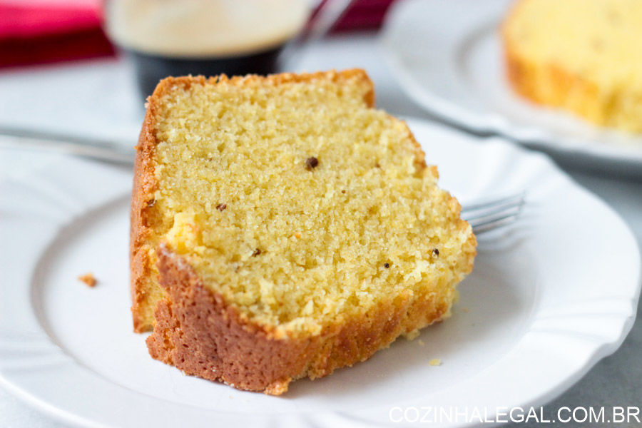
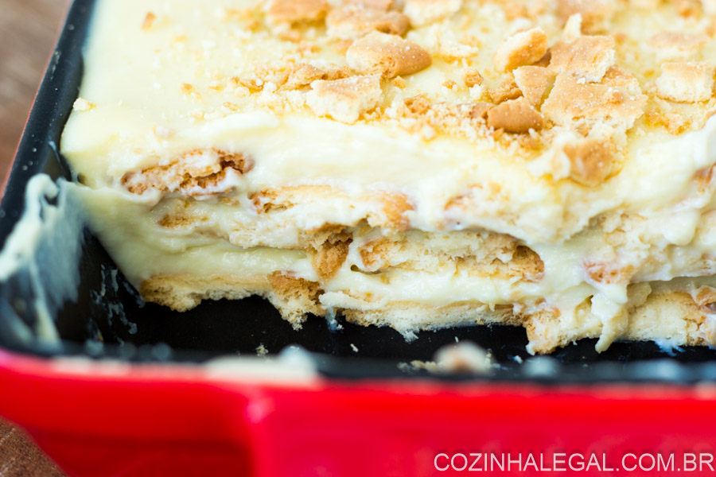
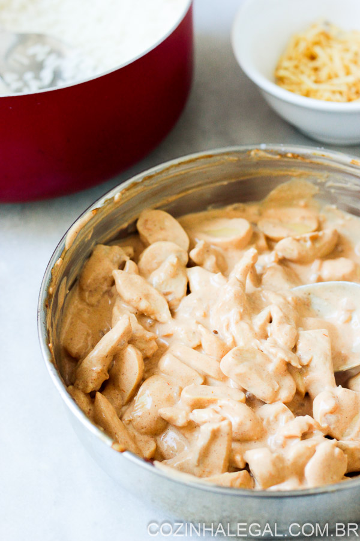

- Unte com manteiga e polvilhe com um pouco de farinha de trigo uma fôrma redonda com furo no meio de 23-25cm. Reserve.
- Preaqueça o forno a 180º.
- No copo do liquidificador coloque os ingredientes "molhados" (ovos, leite e óleo) e bata por 5 minutos na velocidade média.
Enquanto bate, coloque todos os outros ingredientes em uma bacia grande e misture usando um batedor de arame até que fiquem
combinados (coisa de 20 segundos).
- Em seguida, despeje os líquidos sobre os secos e mexa até que forme uma massa homogênea. Transfira a massa para a fôrma untada
e leve ao forno para assar por 30 minutos, ou até que inserindo um palito no centro do bolo o mesmo saia limpo ( no meu forno
foram exatos 30 minutos!).
- Retire do forno e deixe esfriar por 15 minutos ainda na fôrma. Desenforme e delicie-se em seguida.
- Serve 12 pessoas normais, ou 6 com fome.
| Ingredientes |  |
|---|---|
|
• Fubá: 1 e 1/2 xíc. (chá) • Farinha de trigo: 1 xíc. (chá) • Açúcar: 2 xíc. (chá) • Ovos: 4 unidades • Óleo: 1 xíc. (chá) • Leite: 1 xíc. (chá) • Fermento em pó: 1 colher de sopa • Erva doce: 1 colher de sopa • Sal: 1 pitada |
|
| Venha e Saiba Mas :) | |
- Em uma tigela pequena, dissolva o amido de milho com o leite. Misture bem até desempelotar tudo.
- Em uma panela média, fora do fogo, coloque o leite condensado, as gemas peneiradas e o leite com amido de milho.
Mexa utilizando uma espátula até a mistura ficar homogênea.
- Leve a panela ao fogo baixo e misture com a espátula sem parar, até a mistura engrossar. Reserve
- Montagem:
- Em uma travessa retangular e funda de 20cm, coloque uma camada de creme e, por cima, uma camada de bolachas embebidas
nos 100 ml de leite restantes. Repita essa operação até completar acabarem as bolachas. A última camada deve ser de creme.
- Leve à geladeira por 2 horas e sirva em seguida.
| Ingredientes |  |
|---|---|
|
• Biscoito de maisena: 2 pacote(s) • Leite integral: 100 ml • Creme branco • Leite integral: 600 ml • Leite condensado: 1 lata • Gema de ovo: 4 unidades • Amido de milho (maisena): 1 colher de sobremesa |
|
| Venha e Saiba Mas :) | |
- Corte o filé de frango em tiras iguais, tempere com sal a gosto e molho inglês (opcional). Reserve
- Pique a cebola e o alho em cubos pequenos.
- Em uma panela média coloque o óleo, espere esquentar e acrescente a cebola e o alho.
- Deixe dourar bem.
- Acrescente o frango em tiras e doure-o de todos os lados.
- Adicione um pouco de água (1/2 xíc de café), o extrato de tomate (ou ketchup) e a mostarda.
- Deixe cozinhar até ficar macio (cerca de 10 minutos). Se necessário, acrescente água aos poucos para não queimar.
- Por último acrescente o creme de leite e o leite. Misture.
- Deixe ferver e desligue.
- Sirva em seguida servido com arroz branco e batata palha.
| Ingredientes |  |
|---|---|
|
• Filé de peito de frango: 500 g • Cebola picada: 1 unidade • Alho picado: 2 dente(s) • Molho inglês: 1 colher de sopa • Extrato de tomate: 1 colher de sopa • Mostarda: 1 colher de sopa • Creme de leite: 1 caixinha • Leite: 1/4 xíc. (chá) • Sal: a gosto |
|
| Venha e Saiba Mas :) | |